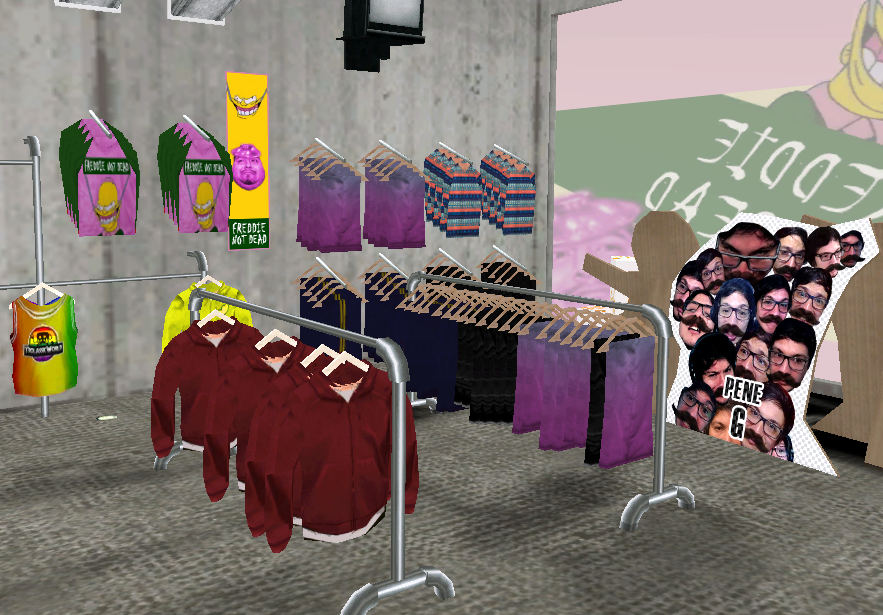

![imagen del local de freddie not dead visto desde afuera, es un local de paredes blancas despintadas,
con el cartel del local con su nombre, una imagen de la imagen que usa freddie reborn que es la cara de
homero simpson en el capítulo de noche de brujas en el que flanders es el amo incuestionable del mundo,
cuando le fuerzan a sonreír con unos ganchos, y del otro lado del nombre hay un pou nes con el sombrerito
metálico de la película de Omedo y Porcel de Monguito, las ventanas tienen una imagen similar, y hay dos
carteles de la marca jouki time con una imagen de coffe riendo](./img/lugares/freddie-not-dead-frente.png "Freddie Not Dead")
El local de ropa Freddie Not Dead está ubicado en el barrio Sazka Wazka, al
noreste de Coffe Town, a media cuadra de Nashe Park. La creadora y actual dueña de este local es
Freddie Reborn. El nombre del
local, que en castellano sería algo como "Freddie no está muerta", viene de la vez en la que Freddie,
luego de haber estado muy activa en los streams de Coffe TV, había desaparecido misteriosa y repentinamente
durante un largo período de tiempo, lo cual llevó al mismo Coffe a teorizar que quizás ella estaba muerta.
Esto llamó la atención de muchos otros miembros de la comu, e incluso
Tortafrita había iniciado una exhaustiva investigación, la cual dio nulos resultados. Todo esto
terminó simplemente un día en el que Freddie volvió a aparecer en un stream cualquiera, y resultó que no estaba muerta
sino que simplemente estaba muy ocupada y no pudo pasarse por un largo tiempo. Además, el nombre de este local
hace alusión a un local de ropa de la vida real llamado
AY Not Dead.
El diseño y colores del local Freddie Not Dead están inspirados, por un lado, en la
imagen de perfil que Freddie utiliza, que es la de
Homero Simpson en el capítulo de noche de brujas en el que
Ned Flanders es el amo incuestionable del universo, y a Homero en un momento se lo muestra con la ropa de Flanders
y con unos ganchos que lo fuerzan a sonreír. Es por esto que los colores utilizados son el verde oscuro, el
rosa y el amarillo. Por otro lado, se utilizan todos los Pou Neses que Freddie creó a lo largo de los streams,
especialmente el primero que hizo, que fue el del Pou Nes usando el gorrito metálico de
la película de Monguito
de Omedo y Porcel.

El interior del local presenta un estilo muy cargado y urbano. Está lleno de carteles y stickers de
distintas marcas de ropa como King V o Jouki Time, otros locales de ropa como Galga Rop, y otras marcas comerciales como Cepichi
o Helados Mister Frio. Además, hay espacios en donde sentarse y probarse ropa, e incluso hay un escenario en donde a veces tocan
bandas de música por las noches (aunque esto no sucede en el juego).
Al igual que el local de Kosiukaio, este local también es atendido por La Tiendita Viajera.
La ropa que se vende aquí son varias remeras con distintos Pou Neses, una remera especial de este mismo local, remeras y buzos
alusivos a la comu de Coffe TV, entre otros.